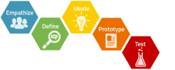

Service Offering
My aim is to support you identify and deliver affordable high impact results through the effective adoption of digital technologies.
In this section I outline my beliefs, some of the open-source tools I use and showcase examples of their application to help inform the art of the possible. These tools are enabling SMEs to exploit the AI and were here to help
Through the forums and workshops outlined in the other section of this site we aim to create a community with whom we can share challenges, ideas and discoveries and open up a digital world of possibilities.
Data Analytics
Data analytics can identify trends, group behaviours, discover correlations that could not be observed manually.
The ability to drive efficiency through automation, predict and respond to events before they happen or target interventions for maximum impact, is providing companies a competitive advantage.
Deep learning is now enabling natural language and image recognition to be interrogated to provide a even richer source of data
While these technologies may seem daunting, complex, and expensive they need not be. Most of the tools are free, open source and by selecting the right projects can deliver value fast.
Service Design Thinking
As the saying goes "With great power comes great responsibility" It's easy to get carried away with more complex and costly solutions but the key to success is to start small.
Adhering to the design thinking methodology ensures that what you produce remains desirable to your customers while also making business sense.
Change Management

Need to add a few words about embedding the digital prodcuts into the business processes
Example projects
Here are a few simple projects that I have delivered to showcase their simplicity:
- Building a real time twitter monitoring app to understand helicopter events
- Modelling networks and connectivity in Python using NetworkX
- Forecasting demand using ARIMA models in R
- Using Natural language processing to extract meaning from job descriptions
- Using Postgres to populate a webpage with database content
- Using Tensorflow to develop deep learning image classification models
If you would like to find out more please make contact via linkedIn using the links at the bottom of this page.
Commonly used tools
Below I have provided an outline of the major packages I use